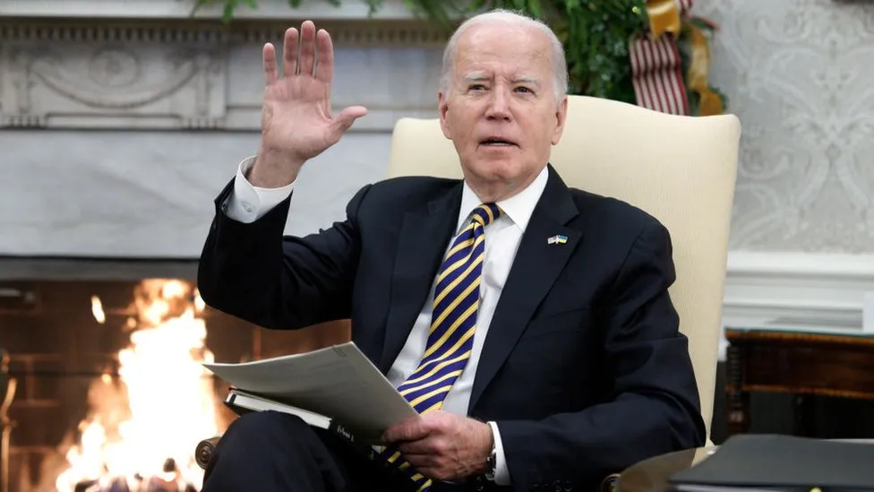

Israel losing global support over Gaza bombing, Biden says

US President Joe Biden has said Israel is starting to lose global support over its "indiscriminate bombing" of Gaza.
- His comments, made to donors at a fundraising event on Tuesday, marked his strongest criticism yet of Israel's leadership.
- Mr Biden has offered unwavering public support to the country since Hamas launched its attacks on 7 October.
- And while he reiterated that Israel could count on US backing, he issued a direct warning to its government.
- "Israel's security can rest on the United States, but right now it has more than the United States. It has the European Union, it has Europe, it has most of the world," he told donors to his 2024 re-election campaign in Washington.
- Although the US voted against the resolution, US President Joe Biden had earlier warned that Israel was losing international support because of "indiscriminate bombing" of Palestinians.
- "But they're starting to lose that support by indiscriminate bombing that takes place," he said.
- Mr Biden, however, added that there was "no question about the need to take on Hamas" and Israel had "every right" to do so.
- The US leader has faced growing pressure, including from within his own Democratic Party, to rein in Israel's military campaign. His remarks align with his administration's recent approach to the war, with officials urging Israel to "put a premium on human life" and give clearer instructions to allow people to avoid the conflict.
- Senior US officials have also displayed increasing discontent at Israel's military response.
- The Hamas-run health ministry in Gaza has said more than 18,400 people have been killed by Israeli bombing since 7 October, when Hamas broke through Israel's heavily guarded perimeter and killed 1,200 people.
- He added that Washington had blocked "international pressure to stop the war".
- "Yes, there is disagreement about 'the day after Hamas' and I hope that we will reach [an] agreement here as well," he said.
Source : click here